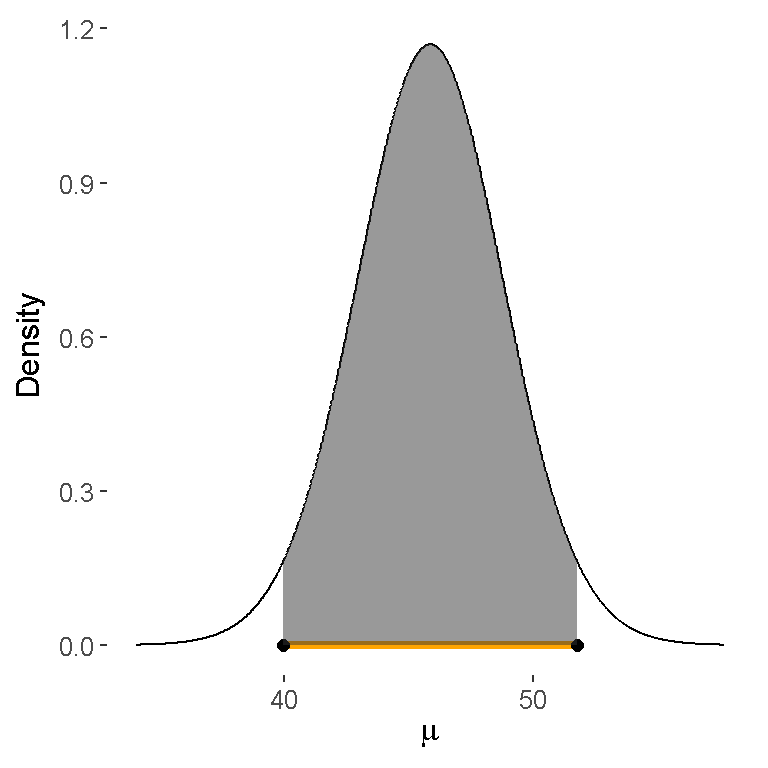

Chapter 3 Introduction to Losses and Decision-making
3.1 Losses and Decision Making
3.1.1 Loss Functions
3.1.2 Working with Loss Functions
3.1.3 Minimizing Expectated Loss for Hypothesis Testing
3.1.4 Posterior Probabilities of Hypotheses and Bayes Factors
3.2 Inference and Decision-Making with Multiple Parameters
This section is focused on the extending the Normal-Normal conjugate family introduced in 2.2.3 to the problem of inference in a Normal population with an unknown mean and variance. We will introduce the Normal-Gamma conjugate family for inference about the unknown mean and variance and will present Monte Carlo simulation for inference about functions of the parameters as well as sampling from predictive distributions, which can assist with prior elucidation. For situations when limited prior information is available, we discuss a limiting case of the Normal-Gamma conjugate family, leading to priors that can be used for a reference analysis. Finally, we will show how to create a more flexible and robust prior distribution by using mixtures of the Normal-Gamma conjugate prior. For inference in this case we will introduce Markov Chain Monte Carlo, a powerful simulation method for Bayesian inference.
It is assumed that the readers have mastered the concepts of one-parameter Normal-Normal conjugate priors. Calculus is not required for this section; however, for those who are comfortable with calculus and would like to go deeper, we shall present starred sections with more details on the derivations.
3.2.1 Inference for a Normal Mean with Unknown Variance
In 2.2.3 we described the normal-normal conjugate family for inference about an unknown mean \(\mu\) with a known standard deviation \(\sigma\) when the data were assumed to be a random sample from a normal population. In this section we will introduce the normal-gamma conjugate family for the common situation when \(\sigma\) is unknown. As both \(\mu\) and \(\sigma^2\) unknown, we will need to specify a joint prior distribution to describe our prior uncertainty about them.
Sampling Model
Recall that a conjugate pair is a sampling model for the data and prior distribution for the unknown parameters such that the posterior distribution is in the same family of distributions as the prior distribution. We will assume that the data are a random sample of size \(n\) from a normal population with mean \(\mu\) and variance \(\sigma^2\); the following is a mathematical shorthand to represent this distribution assumption
\[\begin{aligned} Y_1, \ldots Y_n {\mathrel{\mathop{\sim}\limits^{\rm iid}}}\textsf{N}(\mu, \sigma^2) \end{aligned}\] where the ‘iid’ above the distributed as symbol ‘\(\sim\)’ indicates that each of the observations are independent of the others (given \(\mu\) and \(\sigma^2\)) and are identically distributed.
Conjugate prior Back in 2.2.3, we found that with normal data, the conjugate prior for \(\mu\) when the standard deviation \(\sigma\) was known was a normal distribution. We will build on this to specify a conditional prior distribution for \(\mu\) as \[\begin{equation} \mu \mid \sigma^2 \sim \textsf{N}(m_0, \sigma^2/n_0) \tag{3.1} \end{equation}\]with hyper-parameters \(m_0\), the prior mean for \(\mu\), and \(\sigma^2/n_0\) the prior variance. While previously the variance was a known constant \(\tau^2\), replacing \(\tau^2\) with a multiple of \(\sigma^2\) is needed for representing the joint conjugate prior for the mean and variance. Because \(\sigma\) has the same units as the data, the hyper-parameter \(n_0\) is unitless, but is used to express our prior precision about \(\mu\) with larger values of \(n_0\) indicating more precision and smaller values less precision. We will see later how the hyper-parameter \(n_0\) may be interpreted as a prior sample size.
As \(\sigma^2\) is unknown, a Bayesian would use a prior distribution to describe the uncertainty about the variance before seeing data. Since the variance is non-negative, continuous, and with no upper limit, a gamma distribution is a candidate prior for the variance, based on the distributions that we have seen so far. However, that choice does not lead to a posterior distribution in the same family or that is recognizable as any common distribution. It turns out that the the inverse of the variance, which is known as the precision, has a conjugate gamma prior distribution. Letting \(\phi = 1/\sigma^2\) denote the precision or inverse variance, the conjugate prior for \(\phi\), \[\begin{equation} \phi \sim \textsf{Gamma}\left(\frac{v_0}{2}, \frac{v_0 s^2_0}{2} \right) \tag{3.2} \end{equation}\]is a gamma distribution with hyper-parameters \(v_0\), prior degrees of freedom, and \(s^2_0\) a prior variance or guess for \(\sigma^2\). Equivalently we may say that the inverse of the variance has a \[1/\sigma^2 \sim \textsf{Gamma}(v_0/2, s^2_0 v_0/2)\]
gamma distribution to avoid using a new symbol. Together the Normal conditional distribution for \(\mu\) given \(\sigma^2\) in (3.1) and the marginal Gamma distribution for \(\phi\) in (3.2) lead to a joint distribution for the pair \((\mu, \phi)\) that we will call the Normal-Gamma family of distributions: \[\begin{equation}(\mu, \phi) \sim \textsf{NormalGamma}(m_0, n_0, s^2_0, v_0) \tag{3.3} \end{equation}\]with the four hyper-parameters \(m_0\), \(n_0\), \(s^2_0\), and \(v_0\).
Posterior Distribution
As a conjugate family, the posterior distribution of the pair of parameters (\(\mu, \phi\)) is in the same family as the prior distribution when the sample data arise from a normal distribution, that is the posterior is also Normal-Gamma \[\begin{equation} (\mu, \phi) \mid \text{data} \sim \textsf{NormalGamma}(m_n, n_n, s^2_n, v_n) \end{equation}\] where the subscript \(n\) on the hyper-parameters indicates the updated values after seeing the \(n\) observations. One attraction to conjugate families is there are relatively simple updating rules for obtaining the new hyper-parameters: \[\begin{eqnarray*} m_n & = & \frac{n \bar{Y} + n_0 m_0} {n + n_0} \\ & \\ n_n & = & n_0 + n \\ v_n & = & v_0 + n \\ s^2_n & = & \frac{1}{v_n}\left[s^2_0 v_0 + s^2 (n-1) + \frac{n_0 n}{n_n} (\bar{Y} - m_0)^2 \right]. \end{eqnarray*}\]The updated hyper-parameter \(m_n\) in the posterior distribution of \(\mu\) is the posterior mean, which is a weighted average of the sample mean \(\bar{Y}\) and prior mean \(m_0\) with weights \(n/(n + n_0\) and \(n_0/(n + n_0)\) respectively and does not depend on \(\sigma^2\). The posterior sample size \(n_n\) is the sum of the prior sample size \(n_n\) and the sample size \(n\), representing the combined precision of the estimate for \(\mu\). The posterior degrees of freedom \(v_n\) are also increased by adding the sample size \(n\) to the prior degrees of freedom \(v_0\). Finally, the posterior variance hyper-parameter \(s^2_n\) combines three sources of information about \(\sigma\) in terms of sums of squared deviations. FILL IN MORE DETAILS The first term in the square brackets is the sample variance times the sample degrees of freedom which is the sample sum of squares. The second term represents the prior sum of squares, while the third term is based on the squared difference of the sample mean and prior mean. We then divide by the posterior degrees of freedom to get the new hyper-parameter.
The joint Normal-Gamma distribution for the pair \(\mu\) and \(\phi\), \[(\mu, \phi) \mid {\text{data}}\sim {\textsf{NormalGamma}}(m_n, n_n, s^2_n, v_n)\] is equivalent to a hierarchical model specified in two stages with \(\mu\) given \(\sigma\) having a conditional normal distribution \[\mu \mid {\text{data}}, \sigma^2 \sim {\textsf{N}}(m_n, \sigma^2/n_n)\] and the inverse variance marginally \[ 1/\sigma^2 \mid {\text{data}}\sim {\textsf{Gamma}}(v_n/2, s^2_n v_n/2) \] having a gamma distribution. We will see in the next section how this representation is convenient for generating samples from the posterior distribution.
Marginal Distribution for \(\mu\)
We are generally interested in inference about \(\mu\) unconditionally as \(\sigma^2\) is unknown. This marginal inference requires the unconditional or marginal distribution of \(\mu\) that `averages’ over the uncertainty in \(\sigma\). For continuous variables like \(\sigma\), this averaging is performed by integration leading to the following result:
\(\mu\) given the data is a \[ \mu \mid {\text{data}}\sim {\textsf{t}}(v_n, m_n, s^2_n/n_n) \] with density \[ p(\mu) =\frac{\Gamma\left(\frac{v_n + 1}{2} \right)} {\sqrt{\pi v_n} \frac{s_n}{\sqrt{n_n}} \,\Gamma\left(\frac{v_n}{2} \right)} \left(1 + \frac{1}{v_n}\frac{(\mu - m_n)^2} {s^2_n/n_n} \right)^{-\frac{v_n+1}{2}} (\#eq:Student-t-density) \] with the degrees of freedom \(v_n\), a location parameter \(m_n\) and squared scale parameter that is the posterior variance parameter divided by the posterior sample size. A standard Student \(t\) random variable can be obtained by taking \(\mu\) and subtracting the location \(m_n\) and dividing by the scale \(s_n/\sqrt{n}\): \[ \frac{\mu - m_n}{s_n/\sqrt{n_n}} \equiv t \sim {\textsf{t}}(v_n, 0 , 1) \] with degrees of freedom \(v_n\), location \(0\) and scale \(1\) in the expression for the density in (??). This latter representation allows us to use standard statistical functions for posterior inference such as finding credible intervals.
The Student \(t\) distribution is similar to the normal distribution as it is symmetric and bell shaped, however, the tails of the distribution are fatter or heavier than the normal distribution. The parameters \(m_n\) and \(s^2_n\) play similar roles in determining the center and spread of the distribution, as in the Normal distribution, however, as Student \(t\) distributions with degrees of freedom less than 3 do not have a mean or variance, the parameter \(m_n\) is called the location or center of the distribution and the \(s_n/\sqrt{n}\) is the scale.
Example
Let’s look at an example based on a sample of total trihalomethanes or TTHM in tap water from a city in NC. The data can be loaded from the statsr package
library(statsr)
data(tapwater)Using prior information about TTHM from the city, we will use a Normal-Gamma prior distribution, \(\textsf{NormalGamma}(35, 25, 156.25, 24)\) with a prior mean of 35 parts per billion, a prior sample size of 25, an estimate of the variance of 156.25 with degrees of freedom 24. In section 3.2.3, we will describe how we arrived at these values.
Using the summaries of the data, \(\bar{Y} = 55.5\), variance \(s^2 = 540.7\) and sample size of \(n = 28\) with the prior hyper-parameters from above, the posterior hyper-parameters are updated as follows: \[\begin{eqnarray*} n_n & = & 25 + 28 = 53\\ m_n & = & \frac{28 \times55.5 + 25 \times35}{53} = 45.8 \\ v_n & = & 24 + 28 = 52 \\ s^2_n & = & \frac{(n-1) s^2 + v_0 s^2_0 + n_0 n (m_0 - \bar{Y})^2 /n_n }{v_n} \\ & = & \frac{1}{52} \left[27 \times 540.7 + 24 \times 156.25 + \frac{25 \times 28}{53} \times (35 - 55.5)^2 \right] = 459.9 \\ \end{eqnarray*}\]in the conjugate \(\textsf{NormalGamma}(45.8, 53, 459.9, 52)\) posterior distribution that now summarizes our uncertainty about \(\mu\) and \(\phi\) (\(\sigma^2\)) after seeing the data.
We can obtain the updated hyper-parameters in R using the following code in R
# prior hyperparameters
m_0 = 35; n_0 = 25; s2_0 = 156.25; v_0 = n_0 - 1
# sample summaries
Y = tapwater$tthm
ybar = mean(Y)
s2 = var(Y)
n = length(Y)
# posterior hyperparamters
n_n = n_0 + n
m_n = (n*ybar + n_0*m_0)/n_n
v_n = v_0 + n
s2_n = ((n-1)*s2 + v_0*s2_0 + n_0*n*(m_0 - ybar)^2/n_n)/v_nCredible intervals for \(\mu\)
To find a credible interval for the mean \(\mu\), we use the Student \(t\) distribution. Since the distribution of \(\mu\) is unimodal and symmetric, the shortest 95 percent credible interval or the Highest Posterior Density interval, HPD for short,

is the orange interval given by the Lower endpoint L and upper endpoint U where the probability that mu is in the interval (L, U) is the shaded area which is equal to zero point nine five.
using the standardized t distribution and some algebra, these values are \[ \begin{aligned} L & = m_n + t_{0.025}\sqrt{s^2_n/n_n} \\ U & = m_n + t_{0.975}\sqrt{s^2_n/n_n} \end{aligned} \] or the posterior mean (our point estimate) plus quantiles of the standard \(t\) distribution times the scale. Because of the symmetry in the Student \(t\) distribution, the credible interval is \(m_n \pm t_{0.975}\sqrt{s^2_n/n_n}\), which should look familiar to expressions for confidence intervals.
Using the following code in R the 95% credible interval for the tap water data is
m_n + qt(c(0.025, 0.975), v_n)*sqrt(s2_n/n_n)## [1] 39.93192 51.75374Based on the updated posterior, we find that there is a 95 chance that the mean TTHM concentration is between 39.9 parts per billion and 51.7 parts per billion.
Summary The Normal-Gamma conjugate prior for inference about an unknown mean and variance for samples from a normal distribution allows simple expressions for updating prior beliefs given the data. The joint Normal-Gamma distribution leads to the Student \(t\) distribution for inference about \(\mu\) when \(\sigma\) is unknown. The Student \(t\) distribution can be used to provide credible intervals for \(\mu\) using R or other software that provides quantiles of a standard \(t\) distribution.
For the energetic learner who is comfortable with calculus, the following optional material provides more details on how the posterior distributions were obtained and other results in this section.
For those that are ready to move on, we will introduce Monte Carlo sampling in the next section; Monte Carlo Sampling is a simulation method that will allow us to approximate distributions of transformations of the parameters without using calculus or change of variables, as well as aid exploratory data analysis of the prior or posterior distribution.
Details of Results (optional reading)
TBA